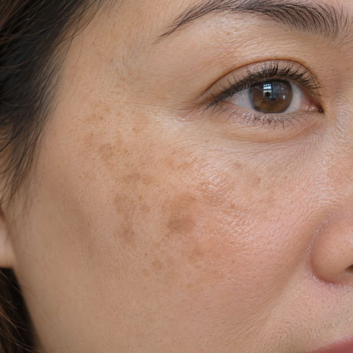

Mua kem đắt mà da vẫn không đẹp lên?
Nhiều khi không phải kem dở, mà dùng sai loại da: da dầu bôi kem đặc thì nổi mụn, da khô dùng sữa rửa mặt tẩy mạnh thì càng căng rát, da nhạy cảm thử nhiều thứ cùng lúc thì ửng đỏ.
Xem da tôi thuộc loại nào →5 câu · nhìn mặt mình trong gương là trả lời được
Làm xong, chị nhận được
- 🔍Da chị thuộc nhóm nào: khô, dầu, hỗn hợp hay nhạy cảm
- ✅Nên dùng gì, tránh gì cho đúng loại da — đỡ mua sai, đỡ tốn tiền
- 📅Lịch chăm da 7 ngày sáng – tối, làm theo được ngay
- 🌿Cách chăm vùng nám, sạm nếu đó là điều chị lo nhất

Mỗi loại da cần cách chăm khác nhau. Biết đúng loại da trước, rồi mới chọn sản phẩm.
Xong rồi! Kết quả da của chị đã sẵn sàng
Chị để lại tên và email: loại da hiện ngay bên dưới, bản đầy đủ có lịch chăm 7 ngày gửi về email để chị giữ lại làm theo.
🔒 Thông tin chỉ dùng để gửi kết quả và nội dung chăm da trong cộng đồng. Hoa không bán, không chia cho ai.
Hoa dùng thông tin của chị thế nào?
Hoa lưu tên, email, số Zalo (nếu có) và đáp án trắc nghiệm để gửi kết quả, nhắc chị vào nhóm. Không dùng cho việc khác, không chuyển cho bên thứ ba. Muốn dừng nhận hoặc xoá thông tin, chị trả lời email của Hoa một câu "dừng" hoặc "xoá thông tin" (theo Nghị định 13/2023/NĐ-CP).
Kết quả của chị
Đang xem trên máy tính? Quét mã bằng camera điện thoại để mở nhóm trong Zalo:
Đây là cách chăm da cơ bản theo loại da, không thay cho khám da. Thấy dấu hiệu lạ (mụn viêm nhiều, ngứa rát kéo dài, mảng da đổi màu) thì chị đi khám da liễu nhé.
© Đàm Hoa · Đẹp Khỏe Cùng Đàm Hoa